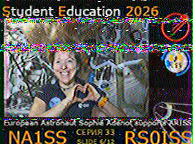
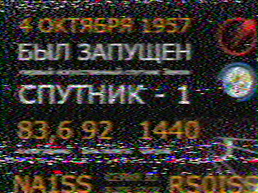

把空间站的电波解成画面
录下国际空间站过境时的 SSTV 音频，交给你的 AI。它会找到信号，逐行还原出 320×240 的原图。
02 · 信号原理
每一行像素，都是 150 毫秒的音调
Robot 36 把图像的亮度和色彩编码成 1200 到 2300 Hz 之间的频率。在左边的图上选一行，看看它在电波里长什么样。

-
01
过境预报
查好国际空间站飞过头顶的时间
你 -
02
录音
手台对准天空，把 145.800 MHz 录成音频
你 -
插件从这里接管
03
寻帧
在整段录音里找到 VIS 08 识别头
插件 -
04
行同步
校准 150 ms 扫描时钟，抵消多普勒漂移
插件 -
05
成像
输出 320×240 PNG 和同步报告
插件
03 · 实测档案
两次过境， 两张来自太空的明信片
以下画面均由本插件从真实录音中解出，未经修图。
ARISS 第 2 帧 · Student Education 2026
- 日期
- 2026-10-06 下午过境
- 录音位置
- 04:48 至 05:24
- 声道
- 右声道
- 同步覆盖
- 98.3%
- 输出
- 320 × 240 PNG

Sputnik-1 纪念图传
- 日期
- 2026-10-05 过境
- 呼号
- NA1SS / RS0ISS
- 恢复方式
- 弱信号噪声协方差恢复
- 输出
- 320 × 240 PNG
04 · 接入方式
一条指令， 或者任何你习惯的方式
基于开放的 Agent Skills 与 MCP 标准，不绑定任何一家 AI 客户端，也不需要上架商店。
Agent Skill（推荐）
一行安装到本机所有兼容的 Agent。
npx skills add BruceStyle/sstv-decoder本地 MCP 服务
适用于只支持 MCP 的客户端，如 Claude Desktop。
发布至 PyPI 前，请将 "uvx", "sstv-decoder-mcp" 替换为 "uvx", "--from", "git+https://github.com/BruceStyle/sstv-decoder", "sstv-decoder-mcp"。
{
"mcpServers": {
"sstv-decoder": {
"command": "uvx",
"args": ["sstv-decoder-mcp"]
}
}
}命令行
不经过 AI，直接解码一段录音。
发布至 PyPI 前，请改用 uvx --from git+https://github.com/BruceStyle/sstv-decoder sstv-decoder ...。
uvx sstv-decoder inspect /path/to/iss_pass.m4a
uvx sstv-decoder decode /path/to/iss_pass.m4a -o ./output_frames环境要求：Python 3.11+ · FFmpeg / ffprobe · uv（推荐） 完整说明见 GitHub README ↗
05 · 关于作者
我在楼顶， 等过一次空间站
我是一名业余无线电爱好者。我希望把从空间站电波里解出图片这件事，交给每个人身边的 AI。
2026 年 10 月，我举着手台和便携八木天线在楼顶守候国际空间站过境，录下了来自 400 公里高空的音频信号，并借助 AI 把嘈杂频调声逐步还原成了清晰的太空明信片。
后来我曾将这套能力做成单一平台插件，却因为商店绑卡门槛没能上架。于是我决定改用开放的 Agent Skills 与 MCP 标准重构并彻底开源，统一成一条跨 Agent 指令，让每位同好都能直接用上。